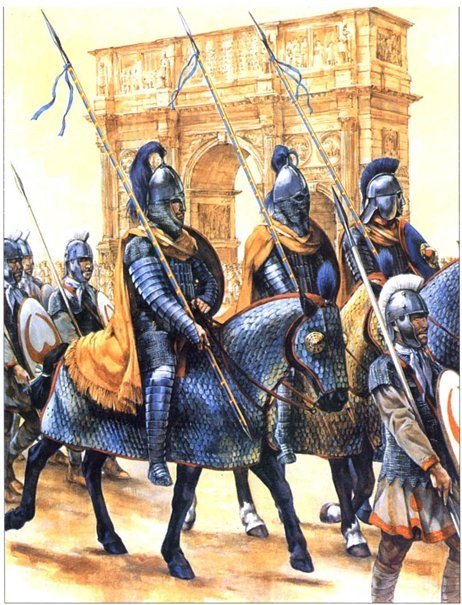
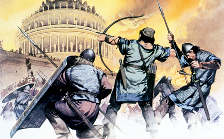
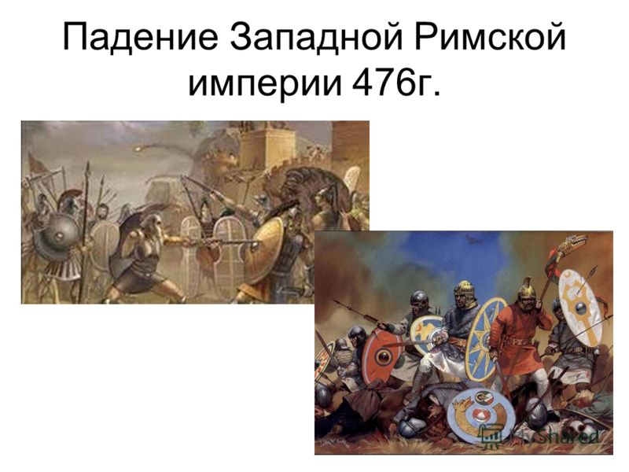

Тут мы с вами узнаем как же распалась Западная Римская империя.
Почти четыреста лет Римская Империя правила землями Средиземноморья и Европы. Территории Англии, Бельгии, Испании,
Португалии, Австрии, Швейцарии, Венгрии, Германии, Румынии, Болгарии,
Греции, Турции, Израиля, Сирии, Саудовской Аравии, Ливии, Египта, Туниса, Алжира и Марокко
раньше находились под властью Римской Империи.
Закат Римской Империи начался с Запада. В период с 400 по 430 года нашей эры многочисленные племена варваров вторглись в границы Империи и остановились во Франции, Северной Африке и Испании. Они постепенно выходили из власти римлян. Западные части империи, такие как Италия, Франция, Испания и Северная Африка к 500 году стали независимыми от римлян. Эти земли стали управляться германскими королями.
Воспользовавшись переворотом в Риме, в результате которого был убит император Валентиниан III, король вандалов Гейзерих отправился из Карфагена с флотом на столицу Западной Римской империи. Город был захвачен без боя, оказавшись без войск и власти в результате убийства толпой узурпатора императорской власти Максима. Римский папа Лев I уговорил вандалов не разрушать город и не убивать жителей в обмен на сдачу Рима.
Года, прошедшие с 455 до 476 года – это года постоянных междуусобиц, постоянной борьбы за престол. За эти годы на римском престоле сменилось 8 императоров и далеко не все из них мирно закончили свои дни. В 476 году в результате очередного переворота императором становится совсем юный Ромул Август. Прошло несколько месяцев и летом 476 года и этот император был свергнут наемниками, и регалии императорской власти, ее символ, были отправлены в Константинополь императору Зенону. С этого момента Римская империя на Западе перестает существовать и, как мы считаем, начинается история средневековой Западной Европы.
